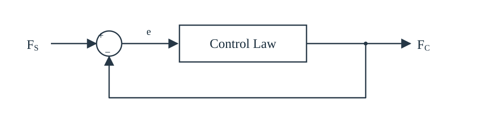
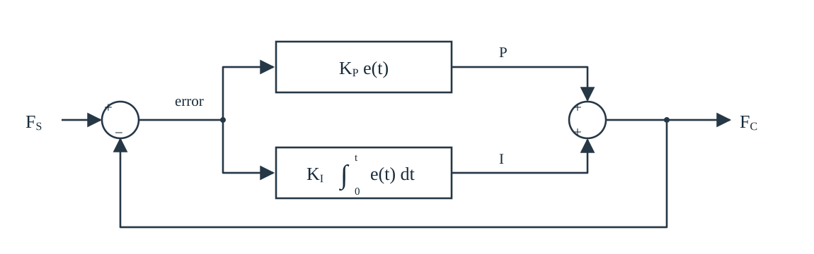

NISTIR 7901：机器人力控制算法与闭环控制
这页按报告 Section V 的 A–F 顺序阅读六类力控方法，并整理 Section VII 的评价指标。每节把报告内容概述、原文段落中文译文与自行补充分开。英文原文请以官方 PDF 为准，本站不把自制图和仿真冒充报告原图或实验数据。
A. 显式力控制（Explicit Force Control）
报告 Section V-A 概述报告将显式力控制描述为主动控制：测得的力 \(F_S\) 与期望施加的力相关联，在紧密反馈回路中形成力误差，并据此直接调整命令力变量 \(F_C\)。随后用 PI 控制说明误差和比例、积分增益如何影响施力及收敛速度。
原文第 1 段 · 中文译文最基本的主动式力控制算法是显式力控制。在这种算法中，测得的力与期望施加的力建立联系 [35]。传感得到的力 \(F_S\) 被用于一个紧密的反馈回路，产生力误差；随后直接利用这些误差来调整命令力变量 \(F_C\)。其示意形式如 Figure 1 所示。
Figure 1：广义显式力控制
下图按报告 Figure 1 的信号方向重绘。打开原尺寸 SVG。

原文 Figure 1 图注 · 中文译文广义显式力控制。测量力与命令力数值之间的差使机器人产生运动。
图示解读（本站补充）\[e=F_S-F_C\]
按
原图所画的符号方向，测量力进入求和点正端，命令力返回负端。这里不把它改写成另一种常见的“目标力减实测力”框图。
原文第 2 段 · 中文译文力控制律的实现通常比较简单，例如 Figure 2 所示的比例—积分（PI）控制。测量力与命令／传感力之间的误差 \(e\)，使施加的力随时间 \(t\) 增加或减少。收敛速度分别由比例增益 \(K_P\) 和积分增益 \(K_I\) 控制。
Figure 2：PI 力控制律
下图重绘 Figure 2 的完整反馈路径与 P、I 支路。打开原尺寸 SVG。

原文 Figure 2 图注 · 中文译文采用 PI 控制的显式力控制。比例控制量 P 和积分控制量 I，推动测量力 \(F_S\) 与命令力 \(F_C\) 相互收敛。
图示解读（本站补充）P 支路产生 \(K_Pe(t)\)，I 支路产生 \(K_I\int_0^t e(\tau)\,d\tau\)，两项相加得到 \(F_C\)。原图还有 \(F_C\) 返回求和点负端的路径。Figure 2 是 A 类方法的 PI 实例，不是第七类算法。两张图使用 \(F_S\)、\(F_C\)、\(e\)，没有 \(u(t)\)，也没有展开执行器或内层伺服结构。
独立示例：目标力为 2 N 的 PI 仿真（非报告原图）
自行制作的教学仿真可以开始、结束并继续运行；跑满 8 秒自动结束，再开始会从零状态重播。曲线显示目标力和实际力，读数显示误差、比例项、积分项与 PI 输出。本仿真不是 NIST Figure 2 的动态复现，也不是压力板、雷赛驱动或 Demo 的实测数据。
单独打开仿真页面
此处自设理想一阶受控对象，并采用目标力减实测力，与 Figure 1、2 的 \(e=F_S-F_C\) 并非同一组信号定义：
\[\dot F=\frac{F_{\mathrm{cmd}}-F}{\tau},\qquad e=F_d-F\]
其中 \(F_d=2\,\mathrm{N}\)，\(F_{\mathrm{cmd}}=K_p e+K_i\int_0^t e(\tau)\,d\tau\)；示例参数为 \(K_p=1.0\)、\(K_i=2.2\)、\(\tau=0.55\,\mathrm{s}\)。这些设定不能用来推断报告的动态对象或 Demo 的设备响应。
B. 刚度控制（Stiffness Control）
报告 Section V-B 概述通过模仿弹簧特性减轻末端接触冲击与受力。被动刚度可由末端串联的真实弹簧、阻尼器实现，以补偿插入任务中的小角度偏差；主动刚度借助闭环力反馈，把机器人变成刚度可编程的弹簧。报告将它描述为适合重视力测量精度的低带宽应用，此处没有给出统一弹簧控制方程。
原文段落 · 中文译文刚度控制是机器人力控制中最基本的类型之一。它通过模仿弹簧的特性，缓和机器人末端受到的冲击及由此产生的力。最直接的实现，是在末端串接由弹簧和阻尼器构成的真实机械结构。所谓被动刚度控制机构已经得到充分研究和应用，其中的工具可用于补偿插入任务中微小的姿态误差 [36]。相比之下，主动刚度控制实际上将机器人变成可编程弹簧，通过闭环系统中的力反馈来控制其刚度。刚度控制最适合重视力测量精度的低带宽应用（例如 [37]）。
C. 阻抗控制（Impedance Control）
报告 Section V-C 概述测量操作者的运动输入，并向操作者反馈反作用力；输出力由操作者给出的速度驱动。输入速度与作用力的关系称为机械阻抗。控制目标是维持 TCP 位置、作用力等变量之间的动态关系，而非孤立维持单个变量。
原文段落 · 中文译文阻抗控制测量操作者的运动输入，再向操作者反馈反作用力 [38]。实质上，输出力由操作者所命令的速度驱动。输入速度与施加力之间的关系，传统上称为机器人的机械阻抗。阻抗控制试图通过维持机器人变量之间的动态关系——例如工具中心点（TCP）位置与施加力之间的关系——来简化控制方式，而不是像大多数基于力的机器人控制算法那样分别维持各个变量。它能在工具与刚性物体稳定接触时提供高带宽的力响应，通常用于抛光、金属去除及某些装配任务等高速应用。
D. 导纳／顺应控制（Admittance / Accommodation Control）
报告 Section V-D 概述作为 C 节的反向关系：测量操作者施加的力，以速度形式产生机器人响应，机器人速度是施加／命令力的函数。可调整系统刚度、阻尼，使末端速度响应增大或减小。报告本节没有把位置列为输出，也没有指定底层位置／速度接口的实现。
原文段落 · 中文译文与阻抗控制方向相反，导纳控制（或顺应控制）[25] 测量操作者施加的力，并以速度的形式反馈这些力。简言之，机器人的速度是命令力的函数。可以调整系统的刚度和阻尼特性，使机器人末端根据施加／命令力而产生的速度增大或减小。
E. 隐式力控制（Implicit Force Control）
报告 Section V-E 概述系统中没有实际力反馈，末端作用力依先验关系推断。弹性关节机器人的预设接触位置方案受零件差异、编码器漂移影响；更常见方式用关节力矩或电流推断末端力。外部力传感器用于先前的测量、标定，不等于运行时的力反馈。
原文段落 · 中文译文与前面讨论的显式力控制回路不同，隐式力控制系统中没有实际的力反馈。相反，末端施加的力是根据测得的关节电流及与之对应的施加力矩的先验知识推断出来的。在一种实现方式中，作为被动刚度控制的一种变体，装有弹性关节的机器人将工具中心点移动到物体表面的预设位置（例如 [39]）。在这些位置产生的作用力，根据此前测量取得的先验知识推断。不过，由于零件差异和编码器漂移，这类方法并不实用。更常见的一种实现是，根据机械臂各关节施加的力矩或测得的电流来推断作用力（例如 [40]）。在这两种情况下，施加的力都使用外部力传感器进行了测量和标定。
F. 自然导纳控制（Natural Admittance Control）
报告 Section V-F 概述有两个不同对象：可控制的虚拟吸引点，以及相对机器人工具坐标系固定的参考点。吸引点与参考点、虚拟弹簧／阻尼和物理作用力共同影响运动；机器人沿合力方向、按惯量的逆加速。报告没有给出完整离散控制律。
原文段落 · 中文译文自然导纳控制也是一种模仿机械系统特性的算法。它使用虚拟弹簧和阻尼器控制机器人的动力学，使机器人朝着一个可控制的虚拟吸引点运动 [41]。吸引点与一个相对机器人工具坐标系固定的参考点相互作用；虚拟阻抗和实际施加的力相互作用，从而产生运动。机器人沿合力方向、按照机器人惯量的逆进行加速，以平衡虚拟力与物理力，使机器人末端的交互既稳定又能及时响应。
六类方法的信号方向
| 方法 | 报告中的控制关系 |
|---|
| A 显式力控制 | \(F_S\) 与 \(F_C\) 构成误差，调整命令力变量 \(F_C\) |
| B 刚度控制 | 模仿弹簧；被动机械弹簧／阻尼或主动闭环力反馈 |
| C 阻抗控制 | 操作者运动／速度输入 → 反作用力反馈 |
| D 导纳／顺应控制 | 操作者施加的力输入 → 机器人速度响应 |
| E 隐式力控制 | 无实际力反馈；根据先验关系、关节力矩／电流推断力 |
| F 自然导纳控制 | 虚拟吸引点与工具固定参考点相互作用；合力 → 加速度 |
此表只是 Section V 文字的概括，不是可直接运行的算法定义。
Section VII：评价指标
报告内容概述报告把力控制表现与装配任务表现分开评价。VII-A 包括：
- 稳定过程（Settle Stability）：接触后多久进入持续稳定状态，往返跳动是否衰减。
- 受阻稳定性（Obstruction Stability）：目标被不可移动物体阻挡时，能否稳定接触而非持续增力。
- 控制结构切换稳定性（Control Switch Stability）：在位置控制与阻抗控制等结构间切换时是否突跳或不稳。
- 表面接触保持／力曲线（Surface Cohesion / Force Profiles）：沿非平面表面运动时能否保持接触并满足所需作用力。
- 作用力限制（Incurred Force Limitations）：接触力是否超过限制，以及机器人如何减速、制动或停止。
VII-B 的装配指标是装配时间、成功率、作用力最大值／平均值，初始碰撞力尖峰需特别关注。理想装配力依赖零件材料与任务，报告没有给出统一数值。
工程补充：单轴恒力 Demo 与插拔（非 NIST 原文）
自行分析 · 不归属于报告 A–F 的实现说明上面的 2 N 仿真用于演示另一种目标力误差定义，一阶对象、参数及抗饱和处理均为自设。真实设备仍需处理采样延迟、饱和、积分累积、接触冲击与行程／力限值。
当前单轴恒力 Demo 的外层链路是“目标力与测量力形成误差 → PID → Z 轴速度命令”。NIST D 节写的是“操作者施加力 → 机器人速度”；两者不能仅因输出都是速度就归为同一方法。Demo 也不能直接等同于 Figure 1、2 输出命令力 \(F_C\) 的框图，严格分类还需明确误差定义、内层伺服接口与接触动态。
恒力压合关注指定方向的力调节；USB 等连接器插拔还要处理对准、接触状态、搜索、到位与卡滞退出。单一标量力不足以独立辨识所有状态。继续阅读恒力控制与柔顺装配学习路线。
相关知识
上游：反馈控制、PI/PID、离散采样、积分饱和、标定滤波与接触力学。并列：刚度、阻抗、导纳、隐式力控、混合力／位置控制。下游：恒力压合、表面跟随、磨抛、Peg-in-Hole、连接器插拔与接触状态识别。
报告图的误差方向与本站 2 N 仿真是否相同？
不同。Figure 1、2 画的是 \(F_S-F_C\)，本站独立仿真设为 \(F_d-F\)。不能把仿真当作 Figure 2 的动态复现。
为什么 D 类导纳控制不能只凭“输出速度”给 Demo 贴标签？
报告 D 节的输入是操作者施加的力，而 Demo 是目标力与实测力形成误差后由 PID 生成速度命令。输入、反馈和控制目标都要一起看。
隐式力控制是否表示完全不用力传感器？
不等于。报告说运行时没有实际力反馈，但推断关系中的力曾用外部力传感器测量与标定。
自然导纳里的虚拟吸引点与参考点是一个点吗？
不是。虚拟吸引点可控，另一个参考点相对机器人工具坐标系固定。